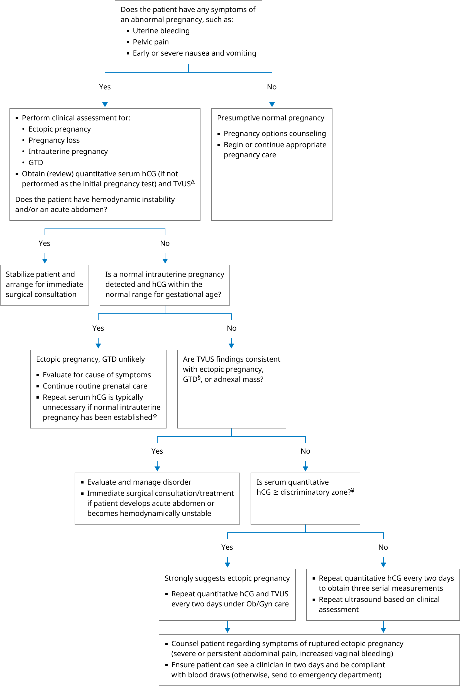

CBC: complete blood count; GTD: gestational trophoblastic disease; hCG: human chorionic gonadotropin; TVUS: transvaginal ultrasound.
* hCG should be undetectable in nonpregnant women and in men. The serum hCG concentration doubles approximately every 29 to 53 hours during the first 30 days after implantation of a viable intrauterine pregnancy. The concentration of hCG peaks at 8 to 10 weeks of gestation, with a peak ranging from 20,000 to 100,000 milli-international units/mL in a pregnancy with a single fetus. The levels decrease to a plateau in the second and third trimesters and then slowly decline towards term. Interpretation of a specific abnormal test result should be based upon the reference range reported with that result.
¶ Ingestion of biotin may cause spurious results in some hCG assays. Discontinue biotin and repeat hCG two days after discontinuation.
Δ For women with significant first trimester vaginal bleeding (more than spotting), also obtain CBC and type and screen (assessing for anemia and alloimmunization risk). If Rh-, give anti-D immune globulin, unless the vaginal bleeding is clearly due to a nonplacental, nonfetal source (eg, vaginal laceration).
◊ If threatened abortion, undetected multiple gestation (or the rare occurrence of a normal fetus and a coexistent molar pregnancy), or heterotopic pregnancy is suspected, serum quantitative hCG and TVUS must be repeated, typically in one week and then again as needed.
§ A very high hCG (>100,000 milli-international units/mL) raises the suspicion of GTD.
¥ The discriminatory zone is the serum hCG level above which a gestational sac should be visualized by TVUS if an intrauterine pregnancy is present (typically 2000 to 3510 milli-international units/mL).